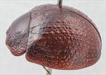
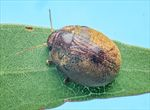
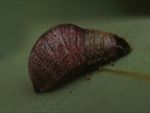
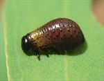
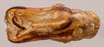
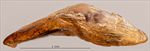
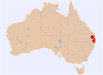

Click on images to enlarge

Male, Amamoor, S.E. Queensland [1997-351a]

Female, Upper Kandanga, S.E. Queensland [2021-326]

Fourth instar larva

Second instar larva

Aedeagus, dorsal view (Amamoor, S.E. Queensland, 1997-351a)

Aedeagus, lateral view (Amamoor, S.E. Queensland, 1997-351a)

Distribution
Ta13
Name
Trachymela sp. Ta13
Reference specimen
25-052594, Kilcoy, SE Queensland.
Adult Description
Length: ♂ 7.3–8.8 mm (n=8), ♀ 8.3–9.4 mm (n=30).
Colouration:
Head: generally uniformly reddish- to dark-brown, rarely with poorly defined darker or black patch, mandibles with black tip; antennomeres 1–11 straw-brown to light-brown, the distal antennomeres sometimes very slightly darker, particularly in their distal half;
Pronotum: brown, concolorous with head, sometimes with diffuse darker or black patches in discal area behind eyes;
Scutellum: brown, concolorous with pronotum, usually broadly edged in a slightly or much darker shade of brown, sometimes the darker shade present throughout;
Elytra: brown, concolorous with pronotum, with darker brown (rarely black) patches, sometimes indistinct, extending from base of elytron above humeral callus to the elytral summit, rarely are these darker markings completely absent, punctures are outlined in a fractionally darker shade than interstices, humeral callus is usually darker brown;
Venter & Legs: venter dark brown, slightly lighter shade towards the lateral margins, legs usually a concolorous shade, inside surface of elytral epipleura brown.
Cuticular Wax: almost invariably a medium to dense and uniformly distributed layer of uniform yellow-brown (mustard-coloured) shade.
Morphology:
Head: punctures variable, usually quite large (pd ≈ 2× ef) and somewhat unevenly but quite densely distributed, sometimes partially obliterated by rugose interstices, rarely smaller and more evenly distributed. Antennae long (AL/BL: ♂ 57–60%, ♀ 41–45%), filiform.
Pronotum: almost evenly curved transversely, with a broad but very shallow depression situated behind the outside edge of each eye, puncturation usually clearly impressed, evenly to slightly unevenly distributed and moderately dense in discal area, becoming much coarser at lateral margins. Much finer punctures are scattered among the larger ones. Front margins join lateral margins in a smoothly rounded right-angle, with lateral margin curving smoothly and gradually towards rear margin.
Scutellum: lightly punctured to quite strongly punctured, more so anteriorly, with puncture size similar or slightly smaller than those on adjacent area on pronotum.
Elytra: surface evenly curved, punctures distinct and relatively evenly distributed, with much smaller punctures scattered sparingly on the interstices, several longitudinal rows of pimple-like raised interstices, each with a central puncture, are present though inconspicuous due to being concolorous with the surrounding surface, surface continuous under humeral callus. Vertical extension of epipleura considerable (HCE/PW = 0.36–0.41).
Venter: prosternal process almost parallel-sided, open or lightly closed anteriorly, short setae present at rear of prosternal process, absent from mesoventrite, a single seta on anterior and median trochanter; front edge of metaventrite beveled, truncate; inner edge of posterior of epipleurae lacking setae.
Male Genitalia (Aedeagus):
Dimensions: small (LPE/BL = 24–28%), subquadrate.
Dorsal view: slightly sinuate sides, narrowest near middle of central section, broadening noticeably close to apex before the sides converge rapidly towards apex forming quite a blunt apical outline, dorsal surface smoothly curved with faint dorso-median channel usually present, tip not or barely protruding, ostium transversely oval.
Lateral view: almost evenly curved throughout its length, thinning towards apex over 20% of length, tip slightly reflexed, very thin and spout-like, short protruding segment of flagellum is strongly curved and moderately thick.
Immature Stages
Eggs: 2.30 × 1.05 mm, brown, with rough, reticulated surface. Laid in small batches (2 per batch?), cemented side-by-side to substrate along one edge.
Larvae: 2nd instar: Head capsule and legs black. Thoracic segments green (except for black front half of pronotum). Abdominal segments brown, except terminal segment, which is black. Small tubercles on body segments. 4th instar: Head capsule black; legs black, except for extremities of coxa and tibia, which are green. Prothoracic shield is green with black anterior edge. Mesothorax and metathorax are green. Abdominal segments are reddish-brown, with dorsal surface of terminal abdominal segment sclerotized and black. All except the prothoracic segment have a few quite small, raised black tubercles. The middle abdominal segments are quite enlarged and bulbous in appearance, especially towards end of 4th instar.
Similar species
Ta01: very similar in structure and colouring to Ta13. Typical specimens of Ta01 are usually slightly smaller than those of Ta13, but there is considerable overlap in the size distributions. Ta01 is found on a much wider range of eucalypt species that includes the ironbarks that are the preferred hosts of Ta13. Live specimens can usually be distinguished by their brown or greyish cuticular wax – that of Ta13 is yellow-brown (mustard). The apex of the aedeagus is rounded in Ta01, blunt in Ta13.
Ta26: another species that co-occurs over a wide area with Ta13. They are of similar sizes and females, particularly those lacking their cuticular wax, can be difficult to distinguish. Specimens of Ta26 usually are uniformly brown dorsally, lacking the darker patches that are present on most specimens of Ta13. Live specimens have a relatively thin layer of brown wax, while in Ta13 it tends to be much thicker and yellow-brown. The apex of the aedeagus is rounded in Ta26, blunt in Ta13. Ta26 is most often found on Corymbia or Angophora.
Notes
Taxonomy: Female specimens of Ta13 can be almost impossible to distinguish from those of Ta26. It is possible that some of the larger specimens included in Ta13 are actually of the latter species.
Distribution & Abundance: Ta13 seems to have a very restricted distribution in SE Queensland and NE New South Wales, where it co-occurs extensively with Ta01.
Host Associations: Ta13 has been almost exclusively collected from a closely related group of ironbark species (Eucalyptus : Symphyomyrtus : Adnataria : Apicales : Siderophloiae) that includes Eucalyptus crebra (n=5), E. siderophloia (n=3), E. fibrosa (n=1) and unspecified ironbark (n=8). The single record from stringybark is likely not a host species.
Population Structure: The sex ratio is very strongly female-biased, with 82% of 45 specimens examined being female (p < 0.001 using an exact binomial test).
Copyright © 2026. All rights reserved.
![Male, Amamoor, S.E. Queensland [1997-351a]](assets/image/Ta13/Ta13_A97-351a_SM.jpg){kind=link}
![Female, Upper Kandanga, S.E. Queensland [2021-326]](assets/image/Ta13/Ta13_A21-326a.jpg){kind=link}
{kind=link}
{kind=link}
{kind=link}
{kind=link}
{kind=link}